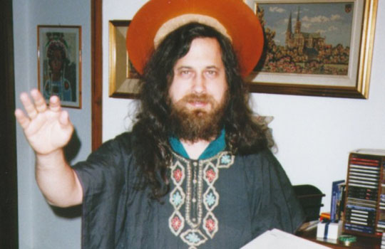
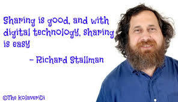

RMS Trivial information
Stallman has a position as an unpaid research affiliate at MIT. He has said that he is "an atheist of Jewish ancestry" and often wears a button that reads "Impeach God". He denies being an anarchist despite his wariness of some legislation and the fact that he has "advocated strongly for user privacy and his own view of software freedom".
Stallman refers to mobile phones as "portable surveillance and tracking devices", and says he refuses to own a cell phone until there's one that runs entirely on free software. He also avoids using a key card to enter his office building since key card systems track each location and time that someone enters the building using a card. According to Stallman, with the exception of a few sites, such as his own website or sites related to his work with GNU and the FSF, he usually does not browse the web directly from his personal computer in order to prevent being connected with his browsing history. Instead, he uses wget or similar programs that fetch content from web servers and then send the content to his email. More recent he stated that he accesses all web sites other than Wikipedia via Tor. Stallman drinks Pepsi and refuses to drink Coca-Cola because of the unresolved deaths of union workers at Coca-Cola plants in Colombia.